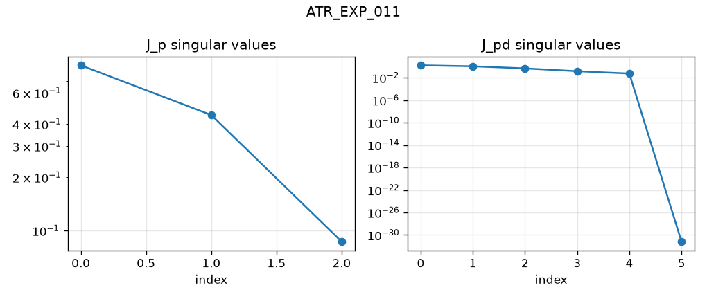
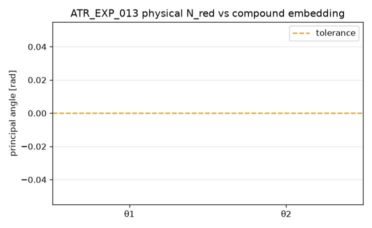
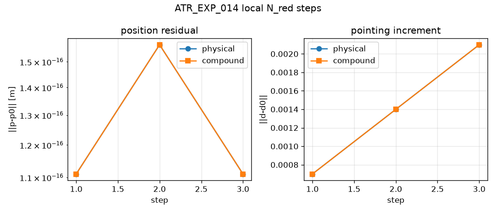

ATR_EXP_011 — Intersecting-pairs Stage A PASS
Expected. IntersectingPairsAligned6R Stage A C6–C8; exact R1∩R2 and R3∩R4
Observed. regular=True, rank_jp=3, rank_jpd=5, rank_jd_nred=2, d_ua=0.000e+00, d_ub=0.000e+00

Stage A survival and local compound-joint probes · Implementation complete / Check-in 3 draft · M3 — Architecture comparison
This readout does not authorize pointing-manifold continuation, fibers, spherical four-bars, or exact UR. Check-in 3 remains a human gate.
Stage A identities survive on IntersectingPairsAligned6R and URLikeAligned6R. On the intersecting-pair chain, literal UA/UB/RC grouping matches physical N_red locally by principal angles and short N_red steps.
Stage A holds at the named regular configurations of GenericAligned6R, IntersectingPairsAligned6R, and URLikeAligned6R. Local compound-joint embedding of the intersecting-pair chain matches physical N_red within the stated principal-angle tolerance, and short corrected N_red steps keep position near p0 with agreeing pointing increments. This is a local C9 result only. It does not establish global continued equivalence or select a continuation parent automatically.
Expected. IntersectingPairsAligned6R Stage A C6–C8; exact R1∩R2 and R3∩R4
Observed. regular=True, rank_jp=3, rank_jpd=5, rank_jd_nred=2, d_ua=0.000e+00, d_ub=0.000e+00

Expected. URLikeAligned6R Stage A C6–C8; exact R2∥R3 and R4∩R5∩R6
Observed. regular=True, rank_jp=3, rank_jpd=5, rank_jd_nred=2, elbow_par=0.000e+00, wrist=('0.000e+00', '0.000e+00', '0.000e+00')

Expected. max principal angle(N_red, compound embed) <= 1e-08 rad
Observed. angles_rad=('0.000e+00', '0.000e+00'), max=0.000e+00

Expected. local 3 N_red steps keep ||p-p0|| <= 1e-10 m and pointing increments agree within 1e-08
Observed. max_p_residual_m=1.570e-16, max_pointing_diff=0.000e+00

Expected. Stage A survives all three architectures; local C9 reported; continuation parent recorded but not auto-selected
Observed. stage_a_all=True, local_c9=True, recommended_parent=IntersectingPairsAligned6R, auto_selected=false

Pending human Check-in 3. If approved, next stage is local pointing-manifold continuation on the recommended intersecting-pairs parent, with UR-like retained as a parallel check. Fibers, spherical RRRR, and exact UR remain blocked.